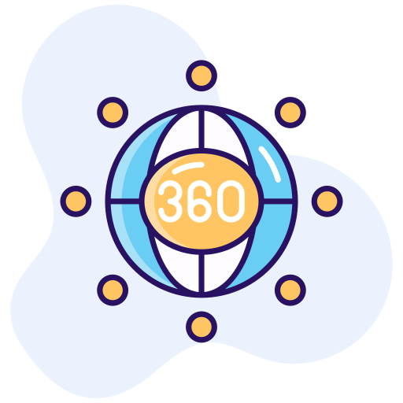
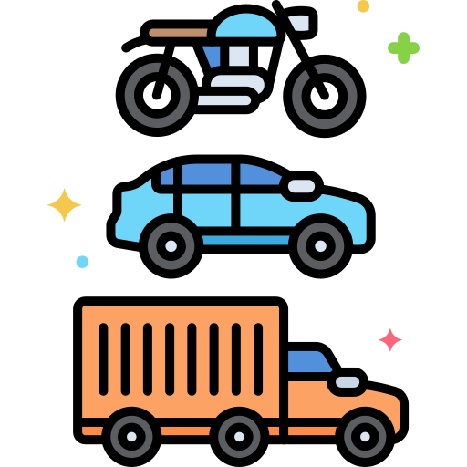
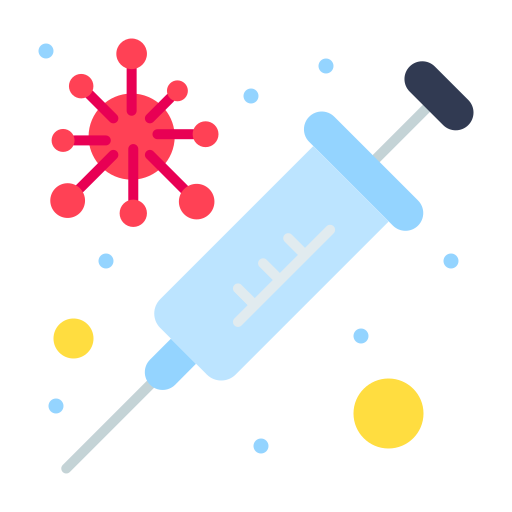
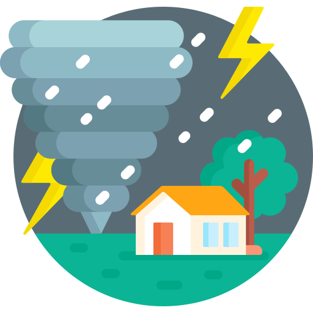
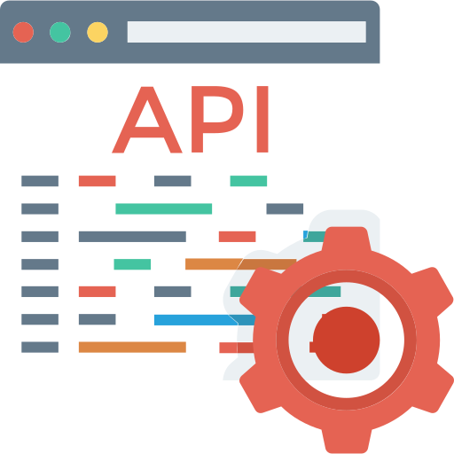
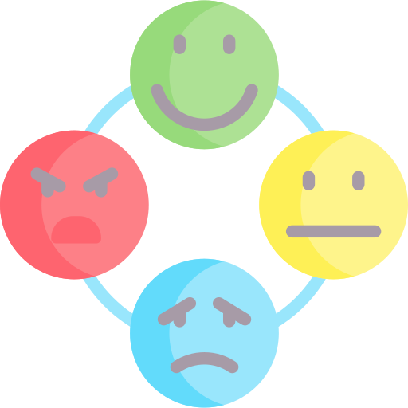

Highlights
Projects
PlanZ
AI-powered event planning system that uses multiple specialized agents to help users plan, organize, and manage events efficiently
- LangChain, LangGraph, LangSmith
- Few-Shot Prompting, CoT, Multi-Agents
HyRES Residual Compression
Hybrid image compression framework that combines traditional JPEG compression with neural network-based residual compression
- JPEG Compression
- Attention blocks, Checkerboard

3D Stereo Reconstruction
Multi-view 3D reconstruction pipeline using ETH3D and Middlebury Chess datasets, analyzing reconstruction quality under occlusions and low-texture areas
- pycolmap, OpenCV SGBM
- Open3D
TextMAE Image Compression
Novel pipeline for image compression using Vision-Language models, Masked Autoencoders, and Diffusion models
- MAE, BLIP, Stable Diffusion
- PyTorch

Intelligent Traffic System
Real-time vehicle detection, classification, counting, speed estimation, and license plate recognition from 2D video frames
- YOLOv8, DeepSort
- PaddleOCR, Supervision

Starbucks Customer Behaviors
Analyzes Starbucks rewards app data to uncover customer insights and the factors that influence engagement with offers
- Pandas, Matplotlib, Seaborn
- LightGBM Classifier

Vaccine Analytics
Relationships between Vaccines, Patients, and Symptoms through VAERS datasets from 1990 to 2022
- Pandas, Matplotlib, Seaborn
- Plotly, Dash, Apriori/FPGrowth

Disaster Response
Classified 25k+ real disaster messages to categorize real-time emergency messages and route them to the right relief agency
- ETL, NLP, ML pipelines
- Flask, SQLite, Bootstrap
Airbnb Analytics
Uncovering the 2022 NYC Airbnb market: insights into popularity, pricing, and tourist behavior
- Pandas, Matplotlib, Seaborn
- Plotly, Folium
Family Tree
Full-stack web app enabling users to create and share family trees with authentication and REST APIs
- Flask, MariaDB, Docker
- REST API, OAuth2, Bootstrap 5

Weather Poller
Agent periodically collects formatted weather data via API, stores in DynamoDB, and serves it via REST endpoints
- Go, DynamoDB, Docker
- AWS (EC2, ECR, ECS, CodePipeline)

Face Emotion Recognition
Detects faces and classifies emotions (Angry, Fear, Happy, Sad, Surprise, Neutral) from live video
- YOLOv5
- ETL Pipeline, CNN, Softmax